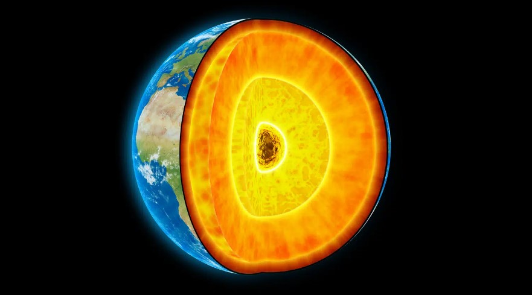

Gás raro formado durante o Big Bang pode estar vazando do núcleo da Terra

Um novo estudo sugere que uma forma extremamente rara de hélio, conhecida como hélio-3, surgida pouco depois do Big Bang, está escapando do núcleo da Terra. O cosmos está repleto de hélio-3, um isótopo de hélio que contém apenas um nêutron em seu núcleo, ao contrário do hélio-4 comum, com dois nêutrons. Este gás misterioso, que é apenas 0,0001% do hélio da Terra, surge, sobretudo, das consequências do Big Bang.
Os cientistas propõem que a descoberta de hélio-3 no núcleo da Terra corrobora a ideia de que o nosso planeta surgiu em uma nebulosa solar próspera, e não nas suas proximidades ou durante sua fase minguante.
Peter Olson, principal autor do estudo geofísico da Universidade do Novo México, sustenta a tese de que o hélio-3 é uma "magnífica revelação da natureza" e uma pista vital para a história da Terra.

Um balão digno de hélio-3
Os cientistas já tinham o conhecimento de que aproximadamente 4,4 libras (2 quilogramas) de hélio-3 escapam do interior da Terra a cada ano. A maioria desses vazamentos ocorre ao longo do sistema de dorsais meso-oceânicos, onde as placas tectônicas convergem. Este fenômeno é intrigantemente comparado a "o suficiente para encher um balão do tamanho da sua mesa", segundo Olson.
Embora os cientistas soubessem dos escapes de hélio-3, as questões fundamentais ainda permanecem: quanto ele tem origem no núcleo da Terra, quanto está presente nos diversos reservatórios da Terra e de onde ele veio?
A influência da Lua
Esse evento transformou a Terra, mas não esgotou totalmente as reservas de hélio-3 do planeta. Parte do gás permaneceu, vazando lentamente do núcleo da Terra, que, argumentam os cientistas, é um repositório robusto e protegido, menos suscetível a impactos cósmicos.
Os cálculos dos pesquisadores, que combinaram as taxas atuais do escape de hélio-3 com modelos de comportamento dos isótopos de hélio, indicam que o núcleo da Terra contém uma quantidade surpreendente de 22 mil milhões de libras (10 teragramas) e 2 biliões de libras (1 pentagrama) de hélio-3. Apesar de as conclusões apresentadas serem convincentes, elas são sujeitas a incertezas.
A equipe de investigação teve que se fundamentar em diversos pressupostos, como a ideia de que a Terra acumulou hélio-3 ao se formar dentro da nebulosa solar e o hélio-3 migrou entre os metais que formam o núcleo e o manto. Outras incertezas, como o tempo de duração da nebulosa solar em relação à velocidade de formação da Terra, poderiam afetar a quantidade real de hélio-3 no núcleo.